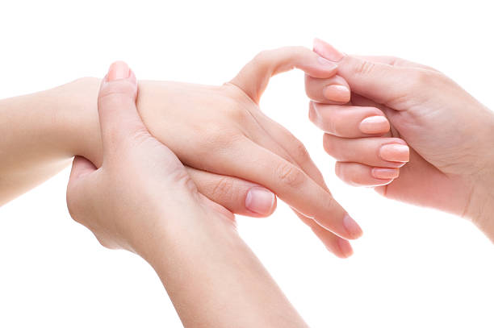
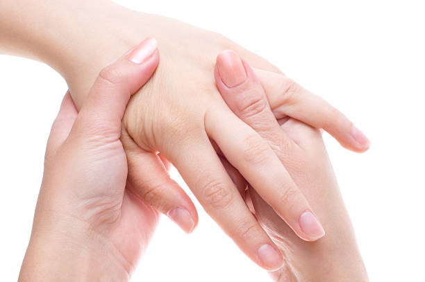
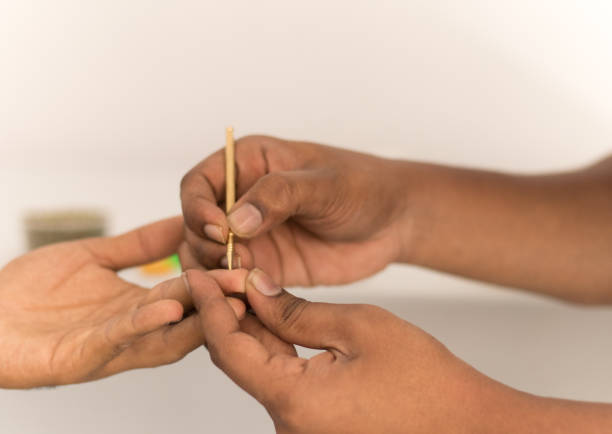

Acupressure and acupuncture
Acupressure and acupuncture are both traditional Chinese medicine techniques that involve the stimulation of specific points on the body to promote health and well-being. Both practices are based on the concept of balancing the flow of energy, or "qi" (pronounced "chee"), within the body along meridians or energy pathways. While acupressure and acupuncture share similarities, they differ in the method of stimulation.
Acupressure
Stimulation:
- Acupressure involves applying pressure to specific points on the body using fingers, hands, or devices. It does not involve the insertion of needles.
Pain Technique:
- Practitioners use their fingers, thumbs, palms, or certain tools to apply pressure to acupoints along meridians.
Pressure Points:
- Acupressure points correspond to specific anatomical locations where the energy flow can be influenced. Pressure is applied to these points to address various health issues.


Self-Application:
- Acupressure can be performed by a practitioner or self-administered by individuals for self-care.
Common Uses::
- Acupressure is often used for relaxation, stress relief, pain management, and promoting overall well-being.
No Needles:
- Unlike acupuncture, acupressure does not involve the use of needles and is considered a non-invasive technique.
Acupuncture:
Stimulation:
- Acupuncture involves the insertion of thin needles into specific points on the body. The needles are typically left in place for a certain duration.
Technique:
- Practitioners use specialized acupuncture needles to pierce the skin and stimulate acupoints along meridians.
Needle Insertion:
- The needles used in acupuncture are very thin and typically cause minimal discomfort during insertion. They are disposed of after a single use.


Traditional Chinese Medicine (TCM):
- Acupuncture is deeply rooted in traditional Chinese medicine principles, where the goal is to balance the flow of qi to promote health.
Professional Application:
- Acupuncture is usually administered by trained and licensed practitioners. It is a regulated healthcare profession in many countries.
Conditions Treated:
- Acupuncture is used for a wide range of conditions, including pain management, stress reduction, digestive issues, and various health concerns.
Holistic Approach:
- Acupuncture is often employed as part of a holistic treatment plan, taking into account the individual's overall health and well-being.
Commonalities:
Meridian System:
- Both acupressure and acupuncture are based on the concept of the meridian system, where energy flows through specific channels in the body.
Balance and Harmony:
- The underlying philosophy is to restore balance and harmony to the body's energy flow to promote optimal health.
Individualized Treatment:
- Both practices often involve an individualized approach, with treatment tailored to the specific needs and conditions of the person.

Considerations:
Professional Training:
- Both acupressure and acupuncture should ideally be performed by trained and qualified practitioners. Acupuncture is a licensed and regulated healthcare profession in many countries.
Safety and Hygiene:
- Practitioners should adhere to safety and hygiene standards. Needles used in acupuncture should be sterile and disposable.